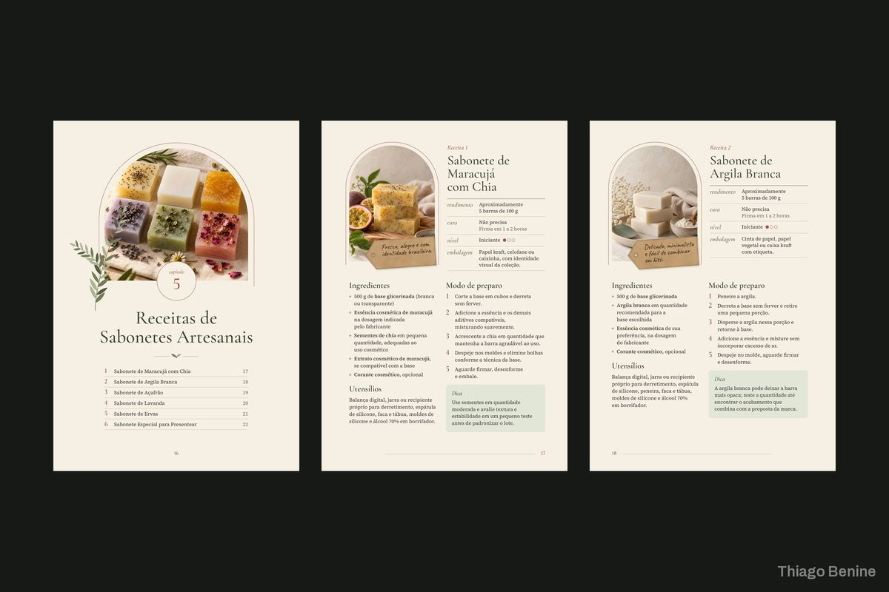
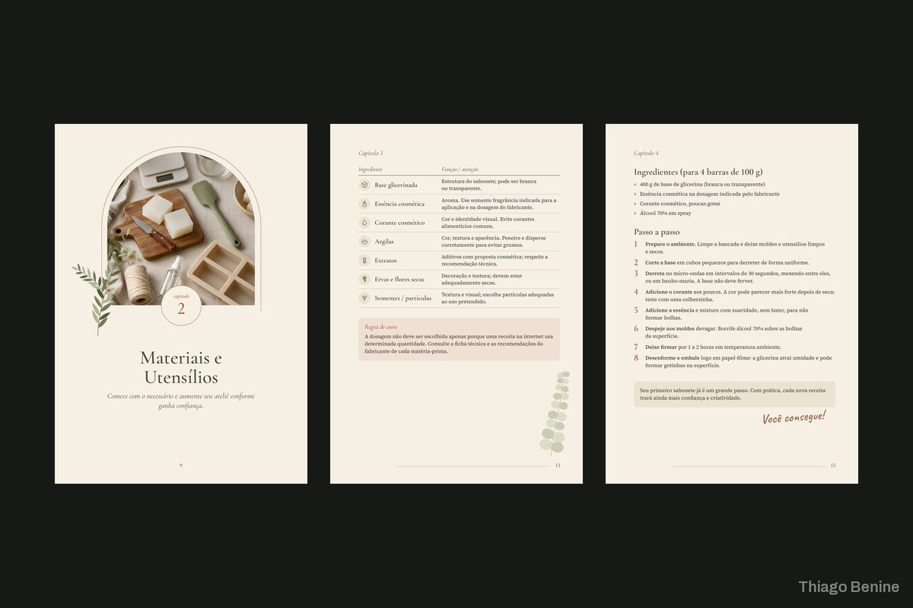
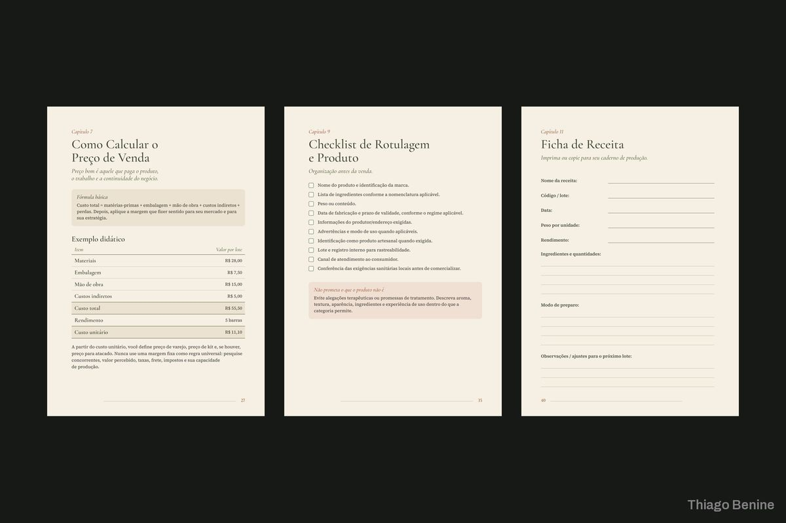
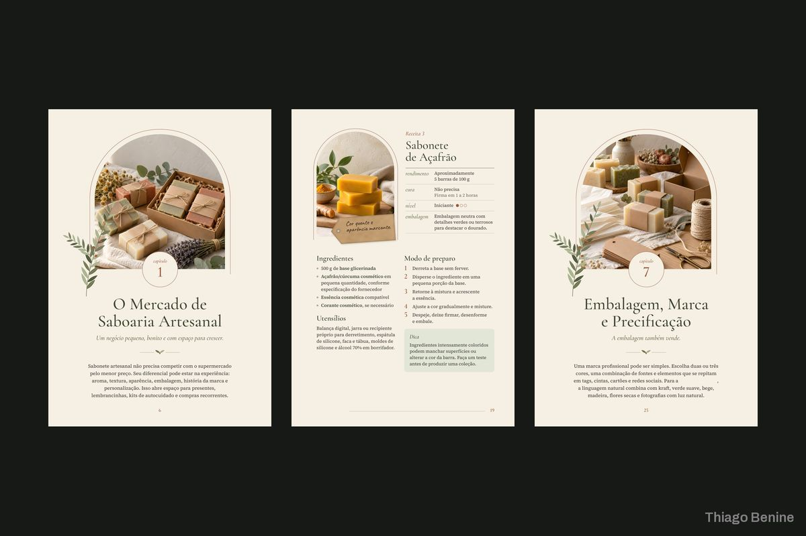

Diagramação e capa de e-book sobre sabonetes artesanais
Livro completo com receitas, tabelas e capa, num visual natural e editorial.





Sobre o projeto
A autora tinha o conteúdo de um guia de sabonetes artesanais e queria um livro bonito e fácil de seguir. Foi criado um sistema editorial com aberturas de capítulo, páginas de receita e tabelas, em tons de creme, verde sálvia e terracota, e a capa completa para impressão. O guia ficou pronto para venda digital e impressa.
O que foi entregue
- Miolo completo diagramado
- Modelos de receita e tabela
- Capa completa para impressão
- PDF do e-book
Avaliação do cliente
5,0 de 5
Gostei muito do resultado da diagramação e da finalização do meu livro. Ele contribuiu para transformar uma ideia que era muito importante para mim em um projeto bonito e bem apresentado.